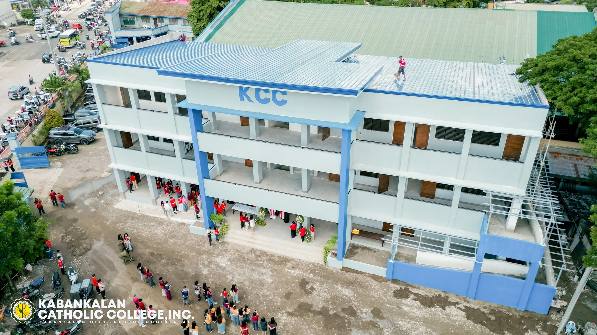
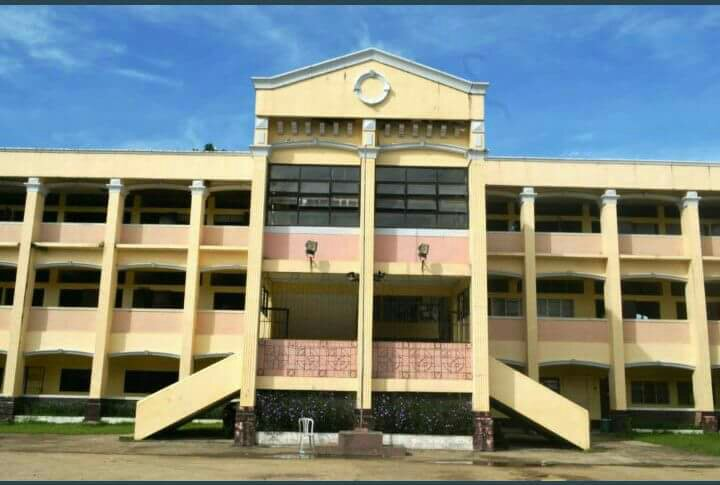

Submit requirements
Prepare your application form and required documents.

Kabankalan City, Negros Occidental
A Christ-centered learning community forming minds, hearts, and lives through quality, inclusive Catholic education.
01 A legacy with purpose
Since 1927, Kabankalan Catholic College has been part of the life of Kabankalan City.
As an evangelizing arm of the Diocese of Kabankalan, KCC brings together academic learning, Gospel values, and service to others. Its mission is to provide quality and inclusive Catholic education, rooted in the Gospel and strengthened by research and meaningful community engagement.
Learn more about KCCGrounded in Catholic faith. Open to discovery. Committed to the community.
02 Find your way
From a first day in school to a college degree, explore the learning stage that fits your next step.

Kabankalan City, Negros Occidental04 Your next chapter
Prepare your application form and required documents.
Complete the entrance examination to assess academic readiness.
Meet with the admissions committee for a brief interview.
Finish enrollment and officially join the KCC community.
Application form, report card/Form 138, Certificate of Good Moral Character, PSA Birth Certificate, and four 2×2 ID photos. Transferees should also bring an Honorable Dismissal.
See admission details05 We’re here to help
Questions about enrollment, programs, or campus life? Reach out or visit the college.
Contact KCC